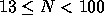

| Power Crisis |
During the power crisis in New Zealand this winter (caused by a shortage of rain and hence low levels in the hydro dams), a contingency scheme was developed to turn off the power to areas of the country in a systematic, totally fair, manner. The country was divided up into N regions (Auckland was region number 1, and Wellington number 13). A number, m, would be picked `at random', and the power would first be turned off in region 1 (clearly the fairest starting point) and then in every m'th region after that, wrapping around to 1 after N, and ignoring regions already turned off. For example, if N = 17 and m = 5, power would be turned off to the regions in the order:1,6,11,16,5,12,2,9,17,10,4,15,14,3,8,13,7.
The problem is that it is clearly fairest to turn off Wellington last (after all, that is where the Electricity headquarters are), so for a given N, the `random' number m needs to be carefully chosen so that region 13 is the last region selected.
Write a program that will read in the number of regions and then determine the smallest number m that will ensure that Wellington (region 13) can function while the rest of the country is blacked out.
Input will consist of a series of lines, each line containing the number of regions (N) with  . The file will be terminated by a line consisting of a single 0.
Output will consist of a series of lines, one for each line of the input. Each line will consist of the number m according to the above scheme.
17 0
7